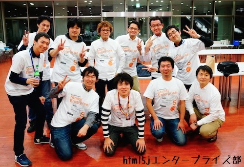
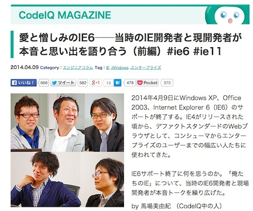
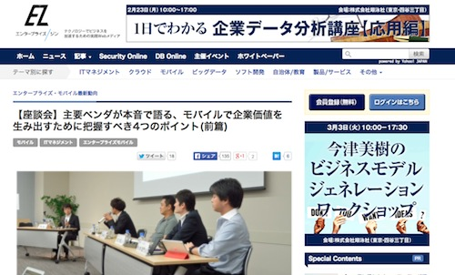
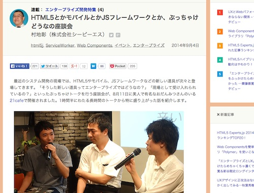

2014年は、雑誌が6件にオンラインメディアが20件以上、セミナーや勉強会、カンファレンスでの登壇が30件弱と、思いのほか多くの機会に恵まれました。また、2件ほどのコミュニティの設立に協力したり、少しばかり大きめのイベントも5件ほど企画と運営に関わったり、認定試験の問題を作ったり。また4月からは、こうした活動が本業の方にも響いてきて、自分でも驚くほど良い方向へと好転しました。
思えば、2012年10月、仕事にプライベート、色んな事が上手くいってなかった当時の私が「これ以上今の状態が続くと、人生積むんじゃね！？」なんて将来を悲観し、追い込まれるような形とはいえ腹をくくったのが大きかったのでしょう。それまで「雑誌に記事書くとか何それ？そんなの一生来ないだろう！」みたいなノリでふわふわと生きていたのですが、脳の恐怖感知センサーが故障してからというもの、ありがたいことに、チャンスが向こうからやってくるという状態がずっと続きました。一歩を踏み出す勇気、とても大事なんですね！
2015年は、こうも簡単にはいかないのでしょう。なんとなくですが、ピークが去った感じもしていますので、このタイミングで一度、「2年前まで普通のサラリーマン的ノリでエンジニアをやっていた私が、技術者向けのイベントを作ったり、技術系の雑誌やメディアに寄稿するようになって思ったこと」というテーマで、2014年を振り返るような形で共有してみようかと思います。
1月〜3月：カンファレンスを企画し運営した
エンタープライズ特化のHTML5のお祭りをしてみたいと思い、2月28日「HTML5 x Enterprise Web Application Conference 2014」というやたら長い名前のカンファレンスを主催してみました。
運営費をできるだけ下げようとオープンソースカンファレンスの主催である株式会社びぎねっと様に相談したところ、400〜600名程度の規模だと60〜80万円程度の資金調達が必要であることがわかり、人生初の企業相手としたスポンサー営業を経験しました。勉強会で動くお金なんて微々たるものだったので、これは良い経験です。
自分の持っている技術をお金に変えるというのには慣れていても、イベントをお金の価値として売り込むというのは初体験です。自分がイベントを作っていける、信頼できる人間であるという証明をしなくてはいけなくなって、ここで初めて「自己のブランディング」というのを意識しました。頑張っているアピールをすることがダサいと思われる国に生きる私にとって、自分の価値を人に説明するというのはなかなか慣れないものです！日本の就職業界は、第三者たるエージェントの力が必須なんじゃないでしょうか！？
企業のお金が動くイベントというのは、お客様は参加者だけでなく企業も加わります。企業の提供する価値と、参加者の望んでいることを、上手く繋いで双方が満足するようにイベントをデザインすることが求められます。また、そのイベントに来たいと思っている人に、イベントの存在が伝わるようPRも行なっていかなくてはいけません。ある程度の集客数が確保されるよう、コンテンツを調整することも多々あります。
このあたりの前提をクリアした上で、本当に実現したいことをイベントの企画に乗せていかなくてはいけないわけですが、いかんせん、技術屋しかやってこなかった自分には、新鮮な体験でした。イベントは成功という形で終わりとても嬉しいです。こんなヨロヨロの状態の代表に、最後まで付いてきて下さったスタッフのみなさんには、本当の本当に感謝しています。
2月には「Developers Summit 2014」という翔泳社主催のカンファレンスも開かれてまして、こちらではステアリング・コミッティという形で参加させて頂きました。また、夏には「Developers Summit 2014 Summer」というイベントが開かれ、こちらはセッションの司会として関わらせて頂きました。どちらも、スポンサー色が強いセッションを担当したのですが、自分のやりたいことを実現する余裕を持たせつつ企画を実現できたというのは、やはり自分でカンファレンスの主催をしたという経験が大きかったからなのでしょう。
「企業の宣伝なんてききたくねー！」なんて方。特にギークな方には多いように見えますが、聞いて下さい！スポンサーがいないと、イベントが開けないし媒体も維持できません！そうなると、情報発信を行う場が作れなくなります！怒っちゃダメです！…ただし、あなたの感性は決して間違っているとは思っていません！
だいたい、これだけ情報飽和な時代に、いかにもなセールス風のセッションをすること自体が時代錯誤でおかしいのです。ただ、このあたりの認識はどこも持っていまして、多くの製品ベンダがエバンジェリストを育成していたり、イベント主催側も発表を良くしようとスポンサー相手であってもかまわずツッコミを入れたりとかしてて、改善されつつもあります。メッセージの発し方に注意が求められる、面白い時代になりましたね。
4月〜7月：雑誌/メディアに寄稿しまくった
4月はIE6のEOLが大事件で、「愛と憎しみのIE6──当時のIE開発者と現開発者が本音と思い出を語り合う(CodeIQ Magagize)」がバズったところからスタートしました。また以前より、Microsoft主催のイベントには登壇することがあったのですが、4月より「Microsoft MVP Internet Explorer 2014」を受賞し、正式ルート(?)から依頼が入ってくるようになりました。この頃から、Microsoftさんとどっぷりお付き合いが始まります。
この時期は、雑誌「Software Design(技術評論社)」の連載を行いつつ、「HTML5認定試験(LPI-Japan)」の問題作成も月1ペースの締め切りに追われつつ、週1本ペースで＠ITやビジネス+ITなどのオンラインメディアの記事を寄稿するという状態でした。平行して、「Apache Cordovaスーパー勉強会」や「htmlday」といったコミュニティのイベントにもそこそこ関わっていたり、「html5jパフォーマンス部」の立ち上げを行なったり、「Google I/O 2014」に行ったりで、寝る暇のない充実した日々が続きました。
とあるライターのコミュニティでは、一日10KB(5,000文字)書けたらなんとか食っていけるという話になっていますが、この時期の私は兼業でありながら倍近くのテキストを書いていました。テキストを効率的に校正するためのJSライブラリなんかを開発して、文章をデバッグする感覚で、工場みたいに文章を吐き出していたわけです。すごく鍛えられているという感じがしました。
様々な媒体や色んな形のコンテンツとして情報を発信していくうちに、発信することの責任について深く考えるようになりました。このブログ「ふろしき.js」も、かつては1万人、10万人に読まれるようなコンテンツを発信していたわけですが、その責任は私一人だけです。それが、メディアや雑誌となると、それだけでメシを食っている色んな方々のコンセンサスを得なくてはいけません。同じ10万人の読者がいたとしても、それを取り巻く利害関係者の数は圧倒的に違うわけです。
こうした中で、おおよそどの記事であっても共通していたのは、記事から読者が「何を持ち帰るのか」を重視するところ。加えて私は、読者のコンテキストの中で、その情報をどのようにアレンジすれば読者にとっての価値へと変わるのかを、強く意識するようになりました。ググって流入する人が多いブログと、購入した後で内容を読む人が大半の雑誌とでは、同じ情報も見せ方が変わってくるのです。UXを学んでいたら、そりゃまぁ知ってて当然だろうとツッコミを入れられそうですが。
情報の発信について、一通りの悩み(通過儀礼みたいなもの)が終わったところで、今度はNDA地獄に悩まされるようになりました。この時期、Microsoft MVPに加えて、複数の企業とNDAを結んで秘密の情報を得るようになったのですが、色んな事を知れば知るほど、どんどん口が開きにくくなるという状況に陥っていました。Microsoftの話をしようとする都度、わざわざググってエバンジェリストのツイートやらブログを漁り公開可能かを確認しなくてはいけない。(これは割とMVP内でも問題視されているみたいです)
世の中、喋っちゃいけないことが割と多い。Microsoft MVPになって以降、数件の記事の公開のみで、ほとんどのMicrosoftネタがお蔵入りになったわけですが、2015年はもう少し発信のありかたを考えようかと思っています。コミュニティの繋がりがそこそこに楽しいので、Microsoft MVP自体は出来る限り続けていきたいと考えています。特に、ナデラがCEOになってからは、割と面白いことがいっぱい起きているので、しばらくは近くで様子を見ていたいといった次第です。
8月〜10月半ば : 登壇、司会業、エバンジェリズム
記事を書くことにも慣れてきた頃、今度は登壇ラッシュみたいなものが起きていました。プライベートでも仕事でも、登壇の準備をひたすら行なっていました。登壇と言っても、コミュニティレベルで無償でやるものから、お金を頂くものまで様々。相手も、がっちがちのエンタープライズ系の時もあれば、一人としてスーツの人がいない制作者向けのこともザラです。
大きな変化として、これまではパネルディスカッションという場ではパネラーとして参加することが多かったのですが、この時期からモデレーター(司会)側として参加することが多くなりました。
「Developers Summit 2014 Summer(翔泳社)」では、IBM、Oracle、Microsoft、SAPとエンタープライズ・モバイル製品を扱うビッグ4を集め、私がモデレーターをさせて頂くという形でパネルを開きました。それだけでも世界初という事件なのですが、開催の直前にIBMがAppleと提携したり、前日にOracleがモバイル製品をアップデートするなど、力関係が大きく変わるような事件が起こり4社の関係は非常に殺伐としているのですが、それでもなお、なごやかな空気でパネルが進行するというとても奇妙な体験をさせていただきました。大人な人って、素晴らしいです！
また、「第6回業開中心会議(ITMedia)」にも参加し、こちらでもモデレーターです。私のスケジュール調整ミスで、多大なご迷惑をおかけしましたが、パネラーのみなさんの素晴らしい実力のお陰で、無事に乗り切ることが出来ました。e4EiではHTML5セミナーを開いたのですが、迷子になって遅刻しかけたり(本当に焦りました)。
東急ハンズの長谷川さんと酒を飲んでいたところ、たまたまUSPのトークになり、「LL Diver」にLTで登壇することに。技術的にはあまりにもバラツキが大きいため、完全にネタに走ろうとして時間切れするという事件が発生。有明まで行って、何をやっているんだろうか！と。こんな感じで、「時間」に関係した事件が多発していました。
この時期は、「エバンジェリスト」という肩書になることが何回かありました。そして毎回、エバンジェリストとは何なのか？と、その言葉の定義に悩むことも少なくありませんでした。技術の説明をすればいいのか？それでは、ただのセミナー講師です。では、技術の良さを説明して聴講者に使って貰えばいいのか？それだけでは、ただのセールスになってしまいます。では、エバンジェリストって一体何をする人なのか？
この前、パブリッククラウドエバンジェリストの吉田パクえさんと一年ぶりぐらいにお酒を飲んでいたのですが、彼がこう言っていました。
「エバンジェリストというのは、その技術の未来が語れる人のことを言うんですよ。」
なるほど…ここまで納得する答えが返ってくるなんて、さすがはwikipediaの「エバンジェリスト」に例として名前が載るだけあるなぁなんて思いました。
10月半ば〜12月末 : 飲んだぐれ
10月頃から仕事が忙しくなり、コミュニティ活動ができない状況が続きました。12月は、ドリンク代が食費を上回るなんて日がザラにあって、寿命は間違いなく縮みましたが、不足していたプログラミング分を補充できて良かったです。
さてこの時期、全く何もしていなかったかといえばそうでもなく、「ぶっちゃけどうなの座談会」を開いたり、「第51回HTML5とか勉強会(html5j)」で登壇したり、「日本Cordovaユーザー会」の立ち上げに関わったり、「ABC 2014 Winter - Android Bazaar and Conference」で登壇したり。また、私が2014年に書いた数少ないブログのエントリを読んで頂けたようで、「Microsoft MVP Open Day Japan」でパネルディスカッションに参加するなど。「コミュニティ活動最近出来てないなぁ」とかツイートしているくせに、それなりに楽しんではいました。
とはいえ、この時期はあまりイベントを作ったりとかそういう余裕が無かったので、基本は酒を飲むとか、酒抜きでミーティングとして話すとか、そういう「人に会うだけ」という機会が多くなりました。忘年会シーズンになると毎晩飲みが続きましたし、上半期にそれなりの量の寄稿をこなした結果、自分のブランドが明確になって、ちょっと話を聞いて欲しいなんてのがものすごく増えました。
お仕事の延長でお会いした人もかなり多く、世の中にはこれだけ色んな種類のエンジニアがいたのかと驚きました。ある女性エンジニアの方からは、有名な占い師に会いに行って、占いの最中その占いのアルゴリズムを解析してアプリ化できないか考えている、なんて話を聞きました。アプリ化した方が、ヒューマンエラーが入らないから占いが正確になる！なんて言ってて、男性には理解し難いアルゴリズムなんてものが、この世の中にはあるんだなあと驚かされました。
自分の住んでいる世界は狭い！なんてのは重々承知していたのですが、まさかここまで異なるドメインがあるとは思いもせず度肝を抜かされました。こういう、色んな人に会えるチャンスが得られるのも、寄稿のいいところなんでしょうね。
いよいよ2015年、川田は30才になります
今年は30才になる、節目の年です。プライベートの面では「今年こそは本を書くぞ！！」と目標を宣言しつつ、仕事の面では2014年に学んだことを活かして一つ大きなアクションを起こしたいと考えています。
うちの会社的には「OSS頑張るぞ！」と言わなくてはいけなくて、Githubにpullする努力なんかが求められていたりします。ただ、個人的にOSSしか見ない人になるのは時代遅れと感じてまして、どちらかと言えば、エコシステム全体をカバーするようなエンジニアになりたいと考えています。コミュニティも、ユーザー主体の団体からエコシステム主体の団体に変わりつつある中で、オープンという言葉の意味を慎重に見極めていく時代に入ったと感じています。そこで今、自分にできるのは、本という形のアウトプットだと考えています。
また、2014年は、記事を書いたり、イベントを作ったりすることも、プログラミングと同じぐらい楽しいと感じていて、ユーザが見えるモノ作りが好きだということを強く強く意識させられました。エンタープライズの文句はあっちこっちから聞こえてきますが、そういうのとは全く関係なく、コンシューマーが使うプロダクトの方が私のモノ作りの感性に合っていると思うようになりました。際に今も、そういう仕事しかしていません。今後どうしていくのか、しばらくの間は模索が続きそうです。
30才、一体どんな感じなのか、さっぱり想像がつきません。ただ、おっさんと呼ばれる年齢なのは間違い無いので、ちゃんとおっさんとしての責務を果たすべく、少し後ろに続いている人たちを育てるような方向に、ちょっとぐらいは自分のキャラをシフトさせようかと思います。
それでは今年も、宜しくお願いします！